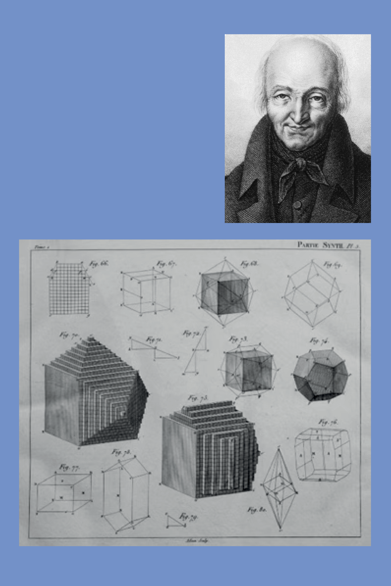
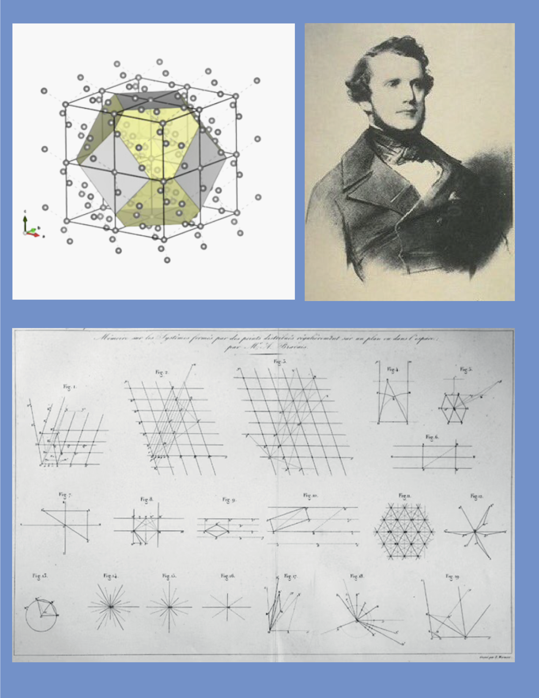
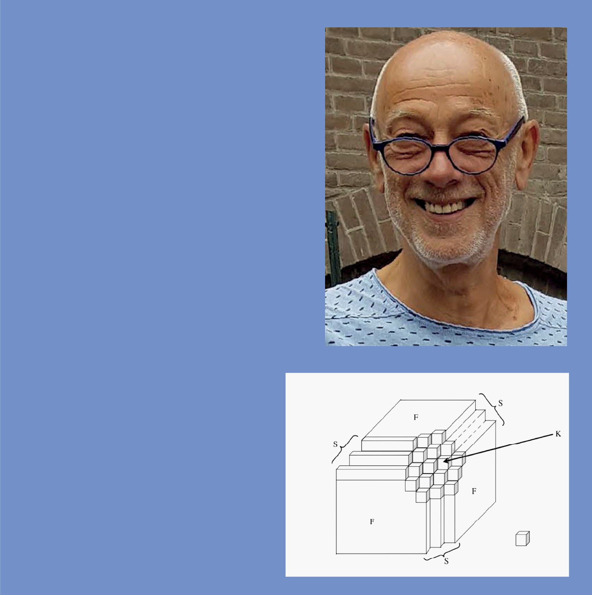
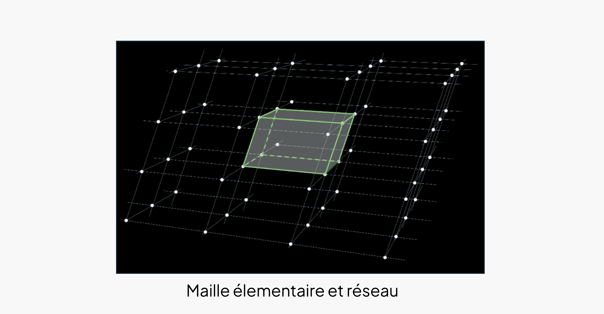

• La science des cristaux
Du multiple à l’unique
Dans l’antiquité, les philosophes pensaient que la matière minérale n’avait pas de formes propres. La forme d’un cristal était accidentelle causée par son environnement. Il a fallu attendre la fin du XVIIIe siècle, pour que les formes polyédriques, hautement géométriques des minéraux et leurs modifications, « métamorphoses », soient étudiées avec attention.
De l’unique au multiple
Au cours du temps plusieurs théories ont été proposées pour établir le lien entre les formes polyédriques des cristaux et leur structure cristalline. On en survole ici trois.
Haüy parle du solide primitif (l’ancêtre de la maille élémentaire) sur lequel s’empilent les briques que Haüy appelait « molécules intégrantes » afin d’obtenir toutes les formes.
Modèle d’Haüy montrant l’empilement décroissant de cubes pour l’obtention de la forme en pentagonododécaèdre du grenat de structure cubique.

Plus tard Bravais (en 1850), remarque une correspondance entre le nombre de nœuds du réseau cristallin et la stabilité de la face du cristal, plus il y a de nœuds plus la face est stable.
RENÉ JUST HAUY 1743 - 1822
René Just Haüy est un minéralogiste et cristallographe français, considéré comme l’un des fondateurs de la cristallographie moderne. En plus de son apport à la classification des minéraux, son œuvre est marquée par l’introduction de la notion de solide primitif, l’ancêtre de la maille élémentaire. Ses travaux montrent que les cristaux sont formés de structures régulières et répétitives, obtenues par l’empilement ordonné des briques qu’il appelle « molécules intégrantes ». De cet empilement résultent les multiples formes géométriques des minéraux.

AUGUSTE BRAVAIS 1811 - 1863
Auguste Bravais est un physicien et astronome français, connu pour ses travaux fondamentaux en cristallographie. Il s’intéresse à la structure des cristaux, aux symétries et aux propriétés physiques des matériaux. Il établit la classification des 14 réseaux cristallins, aujourd’hui appelés réseaux de Bravais.
En 1850, les travaux de Bravais et Friedel expliquent les formes polyédriques des minéraux et plus particulièrement le développement des faces planes de ces formes, par une correspondance entre le nombre de nœuds du réseau cristallin et la stabilité de la face du cristal, plus il y a de nœuds plus la face est stable.

PIET HARTMAN 1922 - 2021
Dans les années 1950 Piet Hartman et William Perdok ajoutent à la théorie les liaisons chimiques interatomiques. La direction des liaisons interatomiques les plus fortes sont responsables de l’altération de la structure même du cristal. On constate l’apparition de faces plates (F : flat=plates) ou d’habitus en forme d’escaliers (S : stepped = à marches) ou de coudes (K : kinked= crantées).

On sait aujourd’hui qu’un cristal est caractérisé par l’organisation spatiale ordonnée de ses atomes. Cette organisation géométrique est appelée « structure cristalline ».
La structure cristalline peut être visualisée comme un empilement infini en 3D d’un solide géométrique à faces parallèles appelé « maille élémentaire ». La totalité des sommets issus de cet empilement constitue un ensemble de points, dits nœuds, appelé réseau cristallin.

Le remplissage du réseau avec les atomes se fait au travers du motif qui représente la quantité de matière (c.à.d. les éléments chimiques et leur position relative) associée à l’identique à chaque nœud.